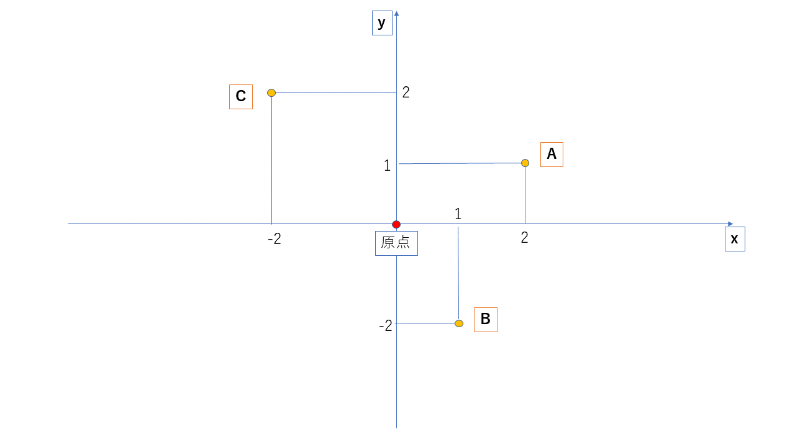
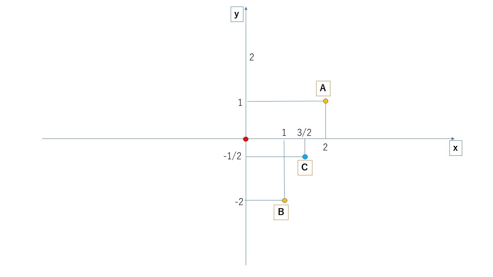
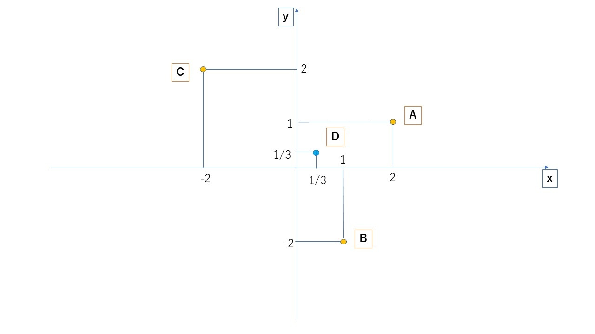
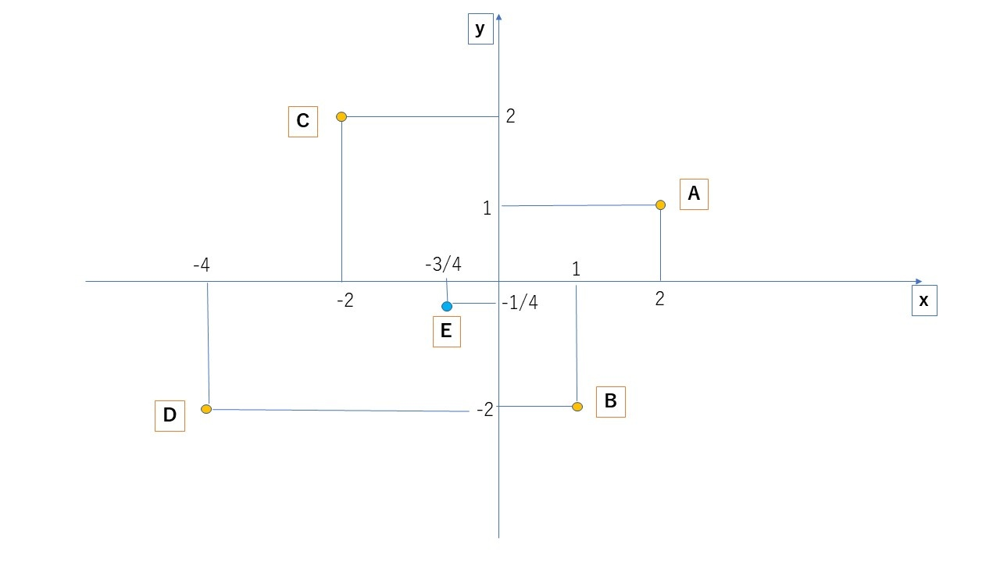
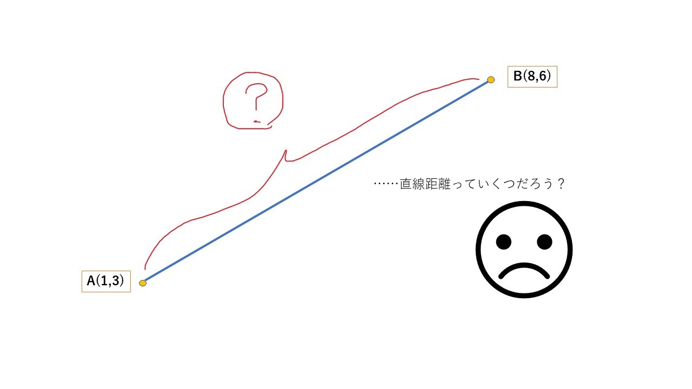
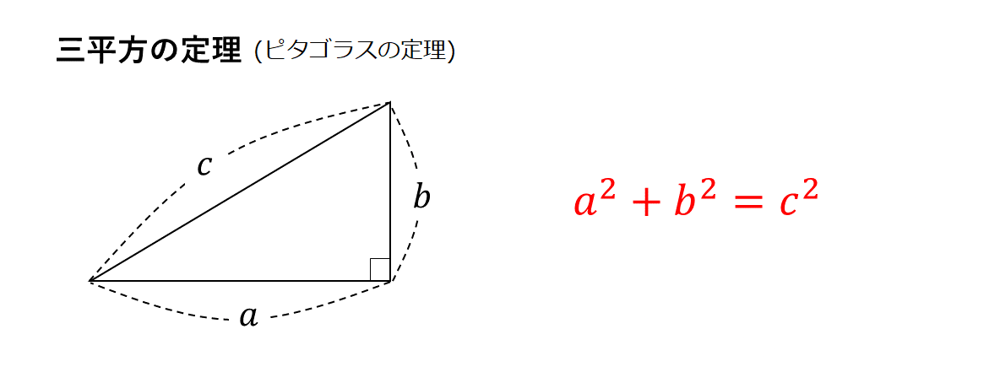
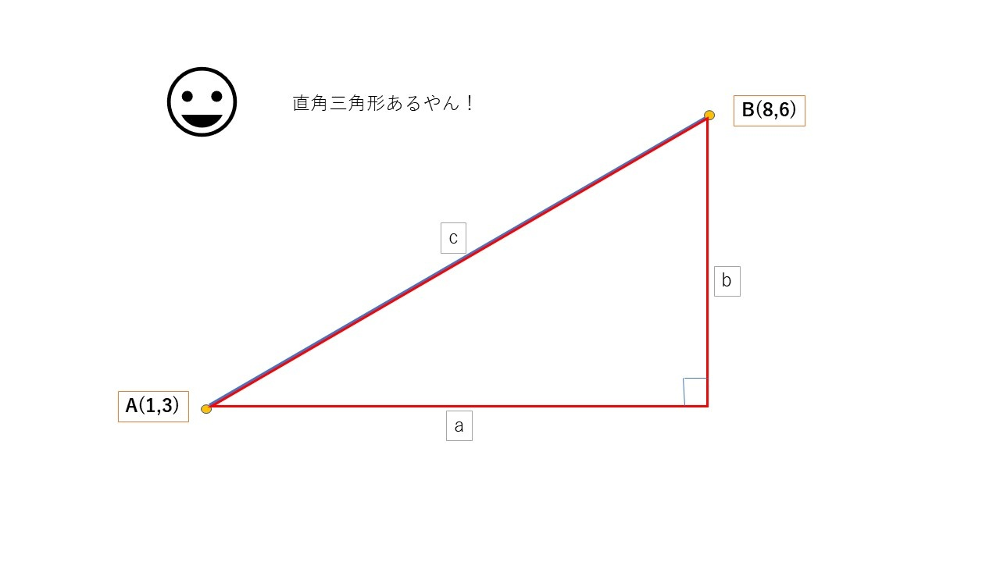
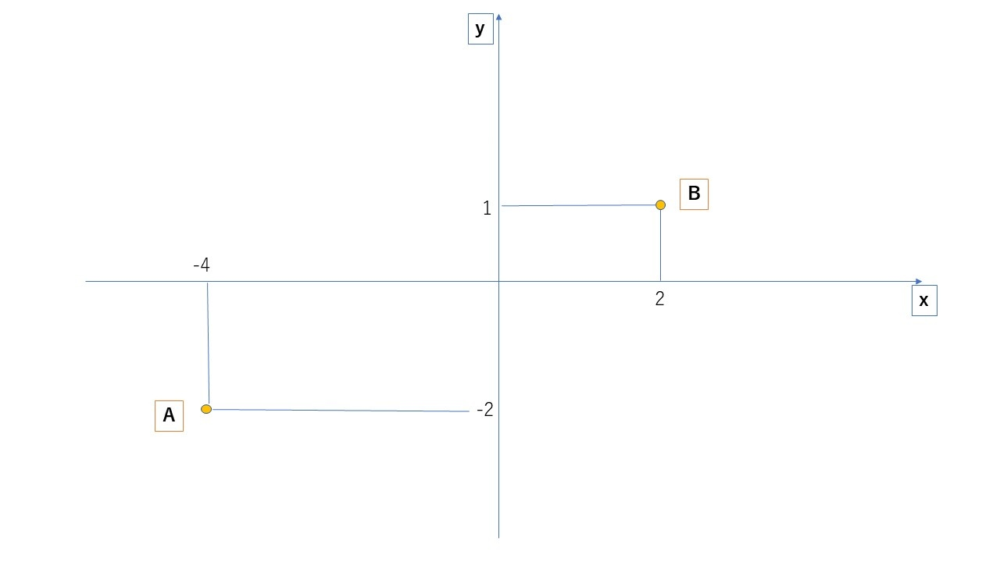
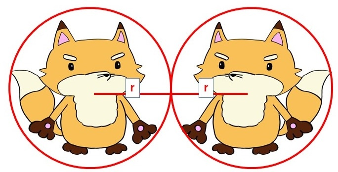
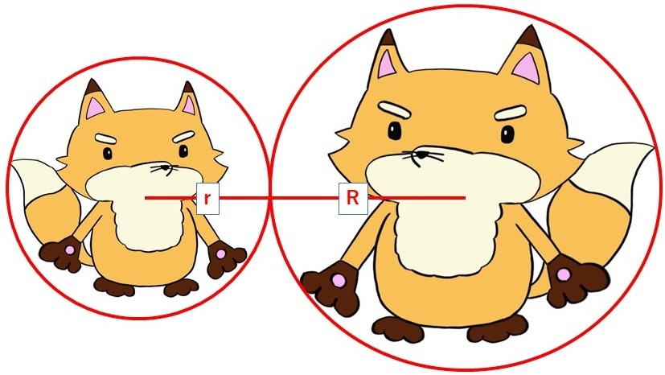

0.ゲーム数学入門（α版） / 3. 点と座標（Zenn から 2026-10-30 に保存。本文の最終更新 2025-07-11T12:03:34.741+09:00）
点と座標の関係や2点間の距離などについて学びます。物体の運動などを考える際には必ず必要になるので、ゲーム制作においては
点の位置を示す値である。具体的には(1,2)のような物を言い、ある点を基準にそこからどれだけ離れているかを示している。その際の基準となる点を

と表せる。
座標を示す値の数字部分を成分と言い、
上記の場合で言えば(◯,)の部分をx成分、(,◯)の部分をy成分と呼ぶ。
複数の点が存在する際に、その中心を知ることは重要である。ゲームにおいて、物体を表現するにはその物体を形成する頂点同士を繋いで表現するが、その際にどこがその物体の中心かが分からなければ描くことが出来ない。一般的なゲームおいては、必ず計算するどころか1秒間に50回以上(最新のゲームだと100回以上)求めている事になる。
2点間の中点ということは、ある点とある点の真ん中の点ということである。であるので、A点とB点の中点をCすると、A点とB点のそれぞれの成分を足して2で割ったものが中点である。

3点間の中点も考え方は同じで、3点のそれぞれの成分を足して3で割ったものである。

ゲームでは頂点は無数に存在するので、n点間(任意の数の点間)の中点を求める必要がある。
n点間であっても考え方は基本的に同じであり、全ての点の座標を足してnで割れば良い。
下記は例として、4点間の中点を出している。

物体の運動を考える際に２点間の距離はたびたび必要になるが、逆を言えば２点間の距離さえ分かればそこを基礎として非常に多くの物理運動を再現できるようになる。物体の運動を考える上では九九のような内容であり、常識として脊髄反射で分かるようになって欲しい。

おそらく『三平方の定理』という名前で習ったと思うが、一般的には『ピタゴラスの定理』と呼ばれる事が多いのでそのように記述する。

が成り立つ。
つまり
ピタゴラスの定理を用いることによって、2点間の距離を求める事が出来る。
下図のように、2点間には必ず直角三角形が存在する。

ピタゴラスの定理により、
となり、2点間の距離が求まる。
まとめると、2点間の距離は以下で求まる。
2点間の距離をL, 2点をA(Ax,Ay) B(Bx,By)とすると、
決められた時間をかけて2点間の移動をする運動を考える。
2点間の移動を考える際には、相対位置という考え方が重要になる。
相対位置とは

上記で言えば、
となる。x方向、y方向ごとに
で求まる。
相対位置はある点からある点への移動を考える際に必ず必要なるので、抑えておいて欲しい。
A点からB点へ任意の時間で動く運動を考える。n秒での移動を考える際は以下の手順で行う。
・A点から見たB点のx方向の相対位置とy方向の相対位置を出す。
・それぞれをnで割ることで、1秒間あたりの移動方向を出す。
となる。
例として、A(1,4),B(-4,6)でありAB間を2秒で移動する運動を考えると、
であるので、
という形で求める。
ピタゴラスの定理(三平方の定理)を利用することで、当たり判定としては最も基礎となる
当たり判定を作りたい物体の中心点を決め、そこから円を作成。
作成した円と円が接触したとき、当たったと分かれば良い。

となっていれば２つの物体は当たっていると言える。
一般化すれば、

物体A：半径2 中心(1,2), 物体B：半径3 中心(4,3)とする。
問1.物体ABは当たってるか？
問2.もし当たっていたらどれだけ離れれば当たらなくなるか？
ピタゴラスの定理より、
これが、『半径＋半径以下』ならば当たっているので
ABは当たっている。
ABがどれだけ離れたかをdとすると
になれば良いので、
よって、
物体A：半径r 中心(a,b), 物体B：半径R 中心(c,d)とする。
ピタゴラスの定理より、
が成り立ち、
となるので、以下が成り立つ。
これが衝突条件であり、
プログラム上ではもっぱらこの計算を毎フレーム行って衝突を確認する。